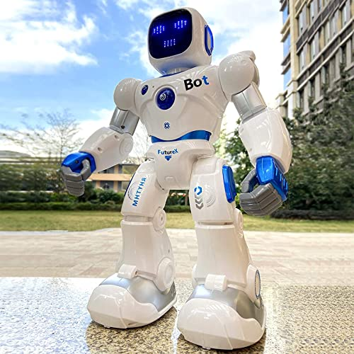

Introduction to Robotechnology
Robotechnology, often referred to as robotics or robotic technology, is a multidisciplinary field that involves the design, creation,
operation, and use of robots. Robots are machines or autonomous systems that can perform tasks autonomously or semi-autonomously,
either guided by pre-programmed instructions or by responding to their environment.
History of Robotechnology
The history of robotechnology traces its roots to ancient times when inventors and engineers conceptualized automated devices. However,
the modern era of robotics began in the mid-20th century with the development of the first industrial robots for manufacturing. The field
expanded rapidly as technological advancements allowed for more sophisticated robotic systems, leading to applications in various industries
such as healthcare, space exploration, and beyond. Today, robotechnology continues to evolve, with ongoing research in artificial intelligence,
machine learning, and the integration of robots into everyday life.

Applications of Robotechnology
Medical Robotics:Robotic technology is extensively used in surgery, assisting surgeons with precision and control in minimally invasive
procedures. Surgical robots like the da Vinci Surgical System enable enhanced dexterity and visualization, reducing patient trauma and
recovery times. Autonomous Vehicles:Robotic systems power the development of self-driving cars and autonomous drones. These vehicles
utilize sensors, machine learning, and complex algorithms to navigate, detect obstacles, and make real-time decisions, contributing to
advancements in transportation and logistics. Industrial Automation:In manufacturing, robots play a vital role in automation. Industrial
robots perform tasks such as assembly, welding, and material handling, enhancing efficiency and safety in production processes. They
contribute to increased productivity and the ability to handle repetitive and hazardous tasks.
Robotic Systems and Machines
Industrial Robots
Used in manufacturing settings for tasks like assembly, welding, and packaging.
Can operate autonomously or be programmed to work alongside human workers.